A clean PixelLab rebuild: one canonical identity,
three forms each generated as a state of it. Static artwork, awaiting visual selection.
Gate 1 — Normal → SSJ1
The brown at the roots was never Ryan's hair. Removing Normal's hairstyle
left a five-hundred-pixel hole where his scalp had been, and the aura sits behind
the figure — so it shone through the gaps between the gold spikes and read as dark curls.
That is why every earlier test could truthfully report “zero Normal-hair pixels” while the
picture stayed wrong. A second fault sat on top of it: the gold fringe was being clipped to
the shape of Normal's old hairline, which left a band of bare forehead with the
fringe's dark outline stranded around it.
Both are fixed by construction, not by covering: the transformed head is
built from the approved head_skin layer with no hair on it at all, and the
fringe is allowed to reach the forehead — down to just above Ryan's eyebrows, which stay
his. Nothing was added to the SSJ1 hairstyle: it is 986 opaque pixels in five shades, all
from the approved gold ramp, at an identical bounding box.
Corrected transformation
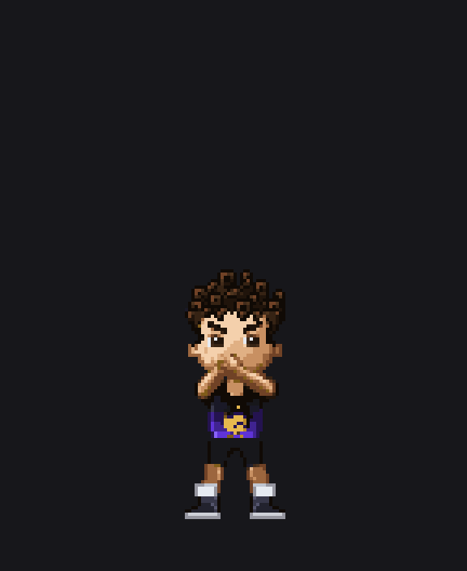
All 25 frames, 4×, slowed to 220 ms. Read back from the exported PNGs.
Forbidden-brown audit — read from the final exported frames
Frame
Normal-hair brown
Aura through the scalp
0 · before the turn
377 (expected)
0
8
0
0
12
0
0
13
0
0
18
0
0
21
0
0
24
0
0
Frame 0 is Normal Ryan, so his brown hair belongs there — 377 px is the
proof the hairstyle is still rendered before the turn, not evidence of a leak.
Every transformed frame is zero on both detectors, measured on the flattened PNG.
Frame by frame
Frame 0before the turn — Normal Ryan377 brown px — expected here
Rejected — 405af70 native 144×176
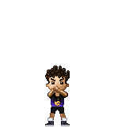
Corrected native 144×176Rejected — head at 8×Corrected — head at 8×
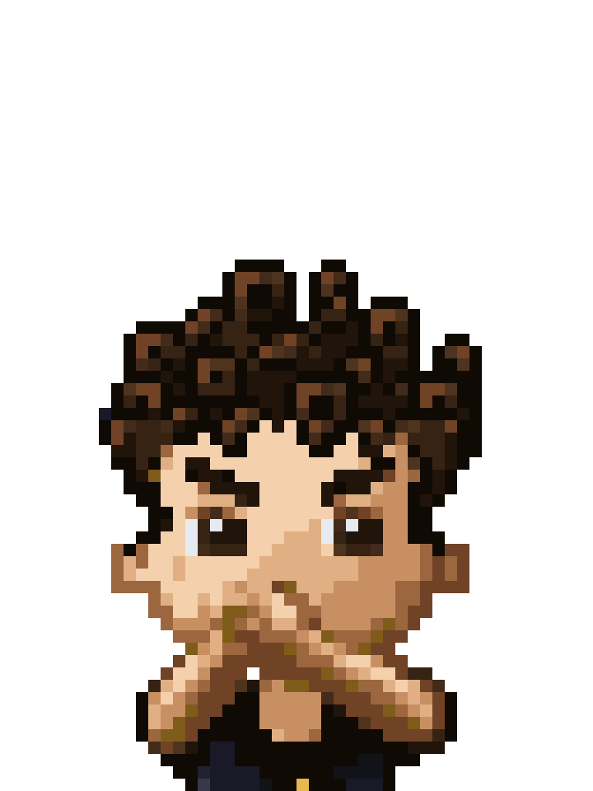
Corrected — head at 16×, the forehead and roots
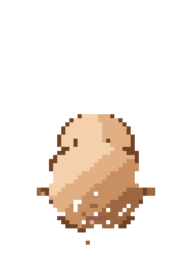
Hairless head only — skin, ears, face shading. No hair of any kind.
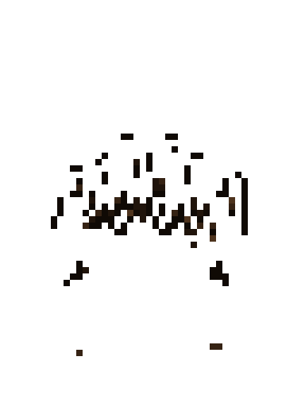
Normal hair only — the removable layer, drawn nowhere after frame 7.
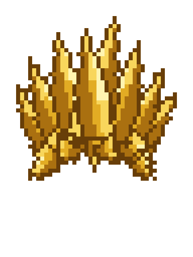
SSJ1 hair only — 986 px, five shades, all approved gold.
Rejected — detection overlay
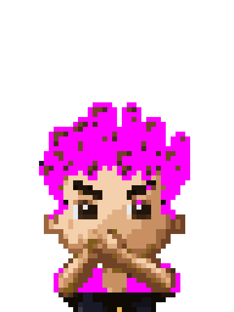
Corrected — detection overlay
Detection overlay
Magenta marks Normal-brown pixels. Frame 0 lights up because this is Ryan before the turn: his hair is still his.
Counted on the flattened PNG, not on the layers that made it.
Normal-brown: 377 · aura through the scalp: 0
Frame 8the turn0 Normal-brown px0 aura through the scalp
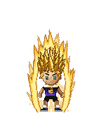
Rejected — 405af70 native 144×176
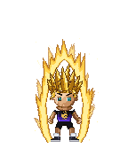
Corrected native 144×176
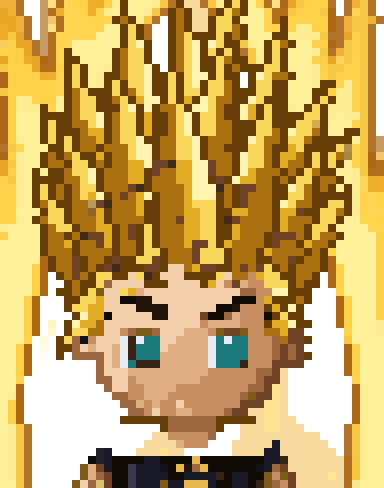
Rejected — head at 8×Corrected — head at 8×
Corrected — head at 16×, the forehead and rootsHairless head only — skin, ears, face shading. No hair of any kind.Normal hair only — the removable layer, drawn nowhere after frame 7.SSJ1 hair only — 986 px, five shades, all approved gold.
Rejected — detection overlay
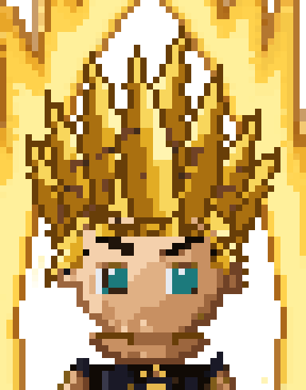
Corrected — detection overlay
Detection overlay
Magenta marks any Normal-brown pixel or aura shining through the scalp, inside the head, skull and hairstyle region. Empty.
Counted on the flattened PNG, not on the layers that made it.
Normal-brown: 0 · aura through the scalp: 0
Frame 12mid-transformation0 Normal-brown px0 aura through the scalp
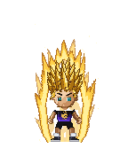
Rejected — 405af70 native 144×176
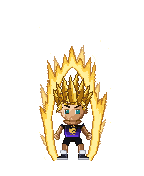
Corrected native 144×176
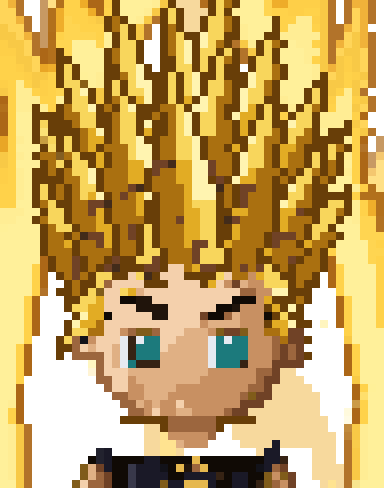
Rejected — head at 8×Corrected — head at 8×
Corrected — head at 16×, the forehead and rootsHairless head only — skin, ears, face shading. No hair of any kind.Normal hair only — the removable layer, drawn nowhere after frame 7.
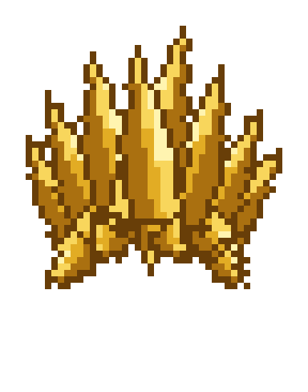
SSJ1 hair only — 986 px, five shades, all approved gold.
Rejected — detection overlay
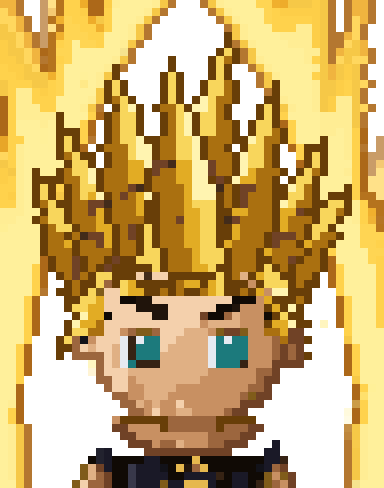
Corrected — detection overlay
Detection overlay
Magenta marks any Normal-brown pixel or aura shining through the scalp, inside the head, skull and hairstyle region. Empty.
Counted on the flattened PNG, not on the layers that made it.
Normal-brown: 0 · aura through the scalp: 0
Frame 13mid-transformation0 Normal-brown px0 aura through the scalp
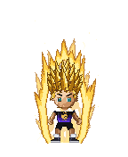
Rejected — 405af70 native 144×176
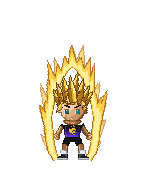
Corrected native 144×176Rejected — head at 8×Corrected — head at 8×
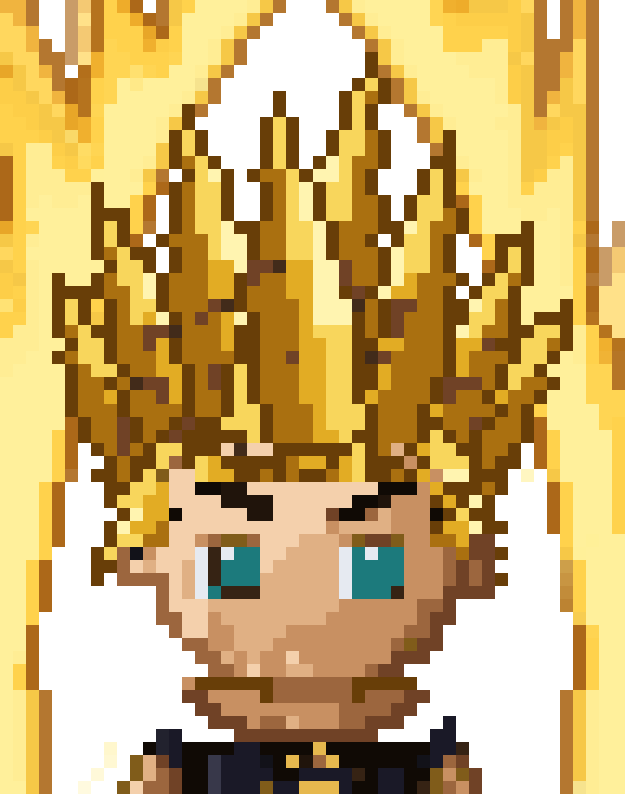
Corrected — head at 16×, the forehead and rootsHairless head only — skin, ears, face shading. No hair of any kind.Normal hair only — the removable layer, drawn nowhere after frame 7.SSJ1 hair only — 986 px, five shades, all approved gold.
Magenta marks any Normal-brown pixel or aura shining through the scalp, inside the head, skull and hairstyle region. Empty.
Counted on the flattened PNG, not on the layers that made it.
Normal-brown: 0 · aura through the scalp: 0
Frame 21settling0 Normal-brown px0 aura through the scalp
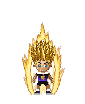
Rejected — 405af70 native 144×176
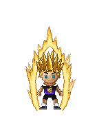
Corrected native 144×176Rejected — head at 8×Corrected — head at 8×
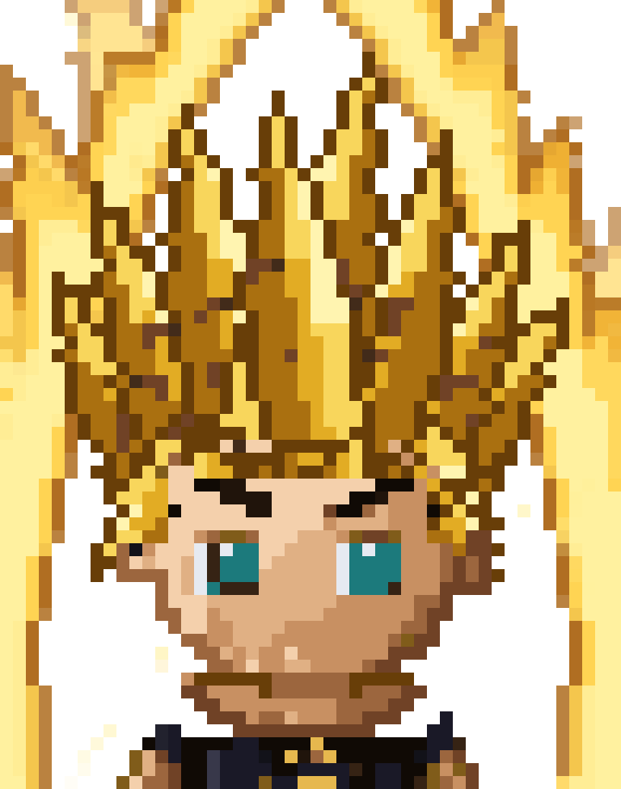
Corrected — head at 16×, the forehead and roots
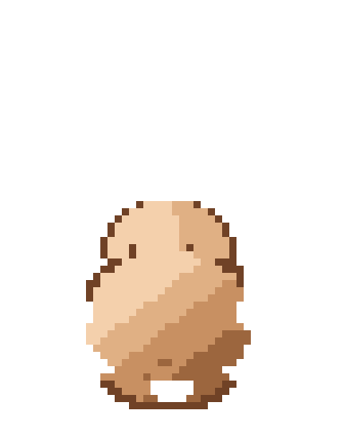
Hairless head only — skin, ears, face shading. No hair of any kind.Normal hair only — the removable layer, drawn nowhere after frame 7.SSJ1 hair only — 986 px, five shades, all approved gold.
Magenta marks any Normal-brown pixel or aura shining through the scalp, inside the head, skull and hairstyle region. Empty.
Counted on the flattened PNG, not on the layers that made it.
Normal-brown: 0 · aura through the scalp: 0
Frame 24destination — SSJ10 Normal-brown px0 aura through the scalp
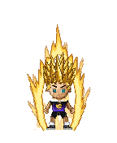
Rejected — 405af70 native 144×176
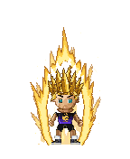
Corrected native 144×176Rejected — head at 8×
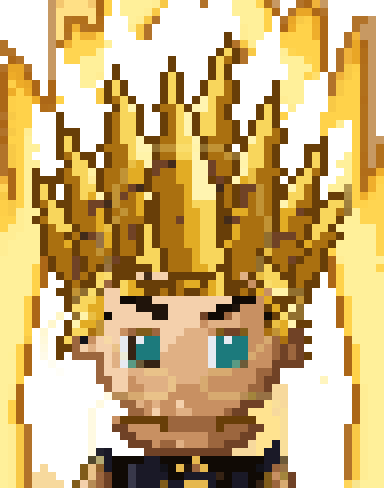
Corrected — head at 8×
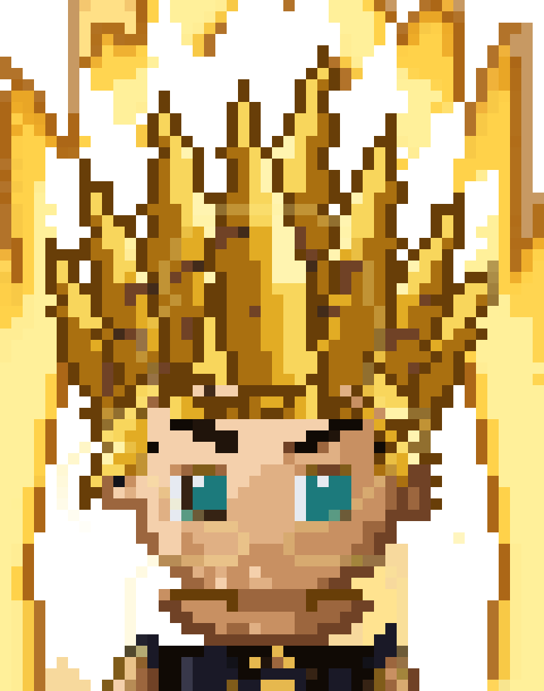
Corrected — head at 16×, the forehead and rootsHairless head only — skin, ears, face shading. No hair of any kind.Normal hair only — the removable layer, drawn nowhere after frame 7.SSJ1 hair only — 986 px, five shades, all approved gold.
Magenta marks any Normal-brown pixel or aura shining through the scalp, inside the head, skull and hairstyle region. Empty.
Counted on the flattened PNG, not on the layers that made it.
Normal-brown: 0 · aura through the scalp: 0
How the head is built
Every transformed frame is composed in this order, so a flattened Normal
head can never sit under a transformed hairstyle:
body with no head hair → hairless skull (approved head_skin,
clipped to this frame's head socket) → SSJ1 rear hair → face and eyebrows →
SSJ1 front hair → aura and effects.
The knockout is derived by toggling the Aseprite hair layers on and off, not by the
classifier and not by colour. Those layers contribute exactly 394 px in the five
Normal-brown ramp shades; none of the five appears in any transformed frame.
The removed region is filled with the artist's own scalp pixels. Nothing is mirrored
and no skin colour is invented.
Audit and controls
The audit reads the exported PNG, geometrically scoped to the head socket,
the skull and the destination hairstyle — the hairstyle is included because two controls
went undetected while the region stopped at the head. Five defects are injected on purpose;
every one must be caught, or the audit is not valid.
Injected defect
Caught
A complete Normal fringe pasted under SSJ1
131 px
One Normal-brown pixel at the gold hairline
1 px
A brown curl placed inside the SSJ1 hair asset
12 px
A fringe curl misclassified as an eyebrow
15 px
Normal rear hair left behind the destination hair
12 px
The fifth control was passing for the wrong reason: it only filled
transparent pixels, and all twelve rear-hair pixels are already covered, so it planted
nothing. It now plants visibly, and is caught.
What did not change
Changed pixels, frames 8–24
96 per frame · 1,632 total
Of those, outside the head and hair region
0
Frames 0–7
byte-identical
Bounding box, all 25 frames
identical
SSJ1 hair asset
986 px, 5 gold shades, same bbox
Skip destination
byte-identical to frame 24
Choreography, frame timing, joint trajectories, poses, positioning, the
shirt, badge, body, legs, shoes and the aura are untouched by this pass: every changed
pixel lies inside the head and hair repair region.